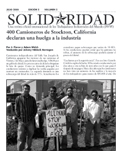
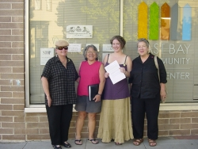

Submitted on Tue, 08/19/2008 - 4:47am

Featuring:
- 400 Truckers in Stockton, California strike the industry
- Spain: 'What's going on in Starbucks?' CNT member fired
- Forum on industrial organizing with the IWW in Chile
- Barrick Gold in Pascua Lama, Chile
PDF File
Submitted on Tue, 08/12/2008 - 6:02pm

From
The Providence Journal
By David Scharfenberg
Journal Staff Writer
PROVIDENCE — A year after a confrontation with police officers in North Providence left her with severe leg injuries, union organizer Alexandra Svoboda arrived at a rally yesterday with a cane, a knee brace and a message of defiance.
“This is the true spirit of resistance,” she said. “This is people saying, ‘no.’ ”
Svoboda, secretary of the Providence branch of the Industrial Workers of the World, was among a group of protesters who clashed with the police Aug. 11, 2007, while marching on Jacky’s Galaxie, a pan-Asian restaurant on Mineral Spring Avenue.
Union members were targeting Jacky’s because the eatery purchased rice and takeout containers from Dragon Land Trading, a restaurant supply company in Queens, N.Y., with a reputation for treating its employees poorly.
Submitted on Mon, 08/11/2008 - 6:27pm
For Immediate Release:
Brandworkers International
press (at) brandworkers.org
Tavern on the Green Stops Serving Wild Edibles Seafood Over Workers' Rights Concerns
Legendary Central Park restaurant is the latest to drop Wild Edibles until it settles a year-long dispute with workers
August 11, 2008
New York, NY- Tavern on the Green, one of the nation's highest-grossing restaurants, has stopped serving seafood from wholesaler and retailer, Wild Edibles, Inc. over concern for employee rights. Wild Edibles workers and their allies have been campaigning for almost a year to reclaim stolen overtime pay; to compel compliance with workplace laws including the right to support a labor union; and to win a more livable wage as well as a health care and retirement plan.
Submitted on Sun, 08/10/2008 - 3:12pm
Tacoma GMB has created an "Organizing Wiki," a place where fellow workers can post organizing tips they've learned through personal experience or been taught about by elders or friends.
The organizing tips are meant to be broad enough to apply to general organizing strategy and techniques but can use examples from specific drives or industries. Tips can range from topics such as "Honesty with Other Workers at Your Job" to "Using Internet Resources."
You can visit the wiki at tacomaiww.pbwiki.com
Eventually the plan is to compile this wiki into a large zine or book of organizing tips to add to our library, to share and to sell.
The wiki is hosted at pbwiki.com, a free wiki hosting site. Anyone can visit the site to check out the tips and to comment on them.
If you are interested in contributing organizing tips or creating your own wiki and would like more information, please email Tacoma Branch Secretary Leah Coakley at leah.coakley [at] gmail.com. Toward the OBU, Leah
Submitted on Sat, 08/09/2008 - 11:23am

The workers and management at Stonemountain & Daughter, a Berkley California based Fabric Store, have signed a new contract. Tentative agreement on the contract was reached in the final bargaining session on the night of June 26th, the shop vote was unanimous in favor of the contract, and the contract was officially ratified on July 22nd.
The gains for all the workers in the shop are huge: a raise in the starting wage from $9.25 per hour to $10.60 per hour, employer funded health care for employees working over 24 hours per week, a 35% raise in paid time off, new holidays, and even an easy chair in the break room. In a win for the campaign to retain the eight hour day, all overtime is now guaranteed to be voluntary, meaning that anyone who chooses to work only eight hours cannot be disciplined for refusing overtime.